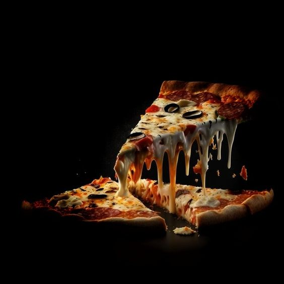
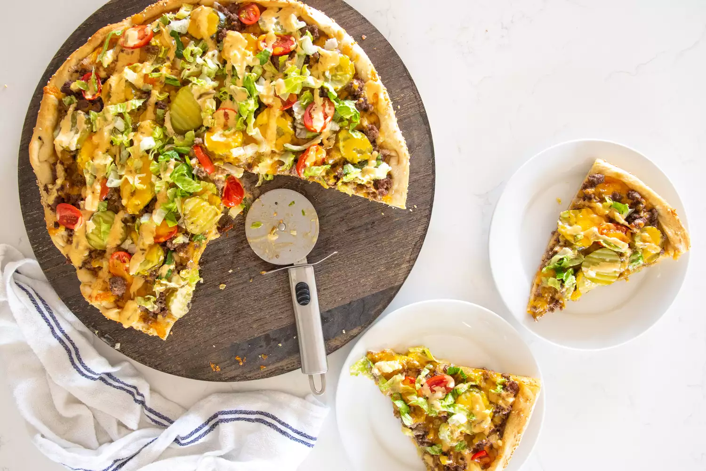
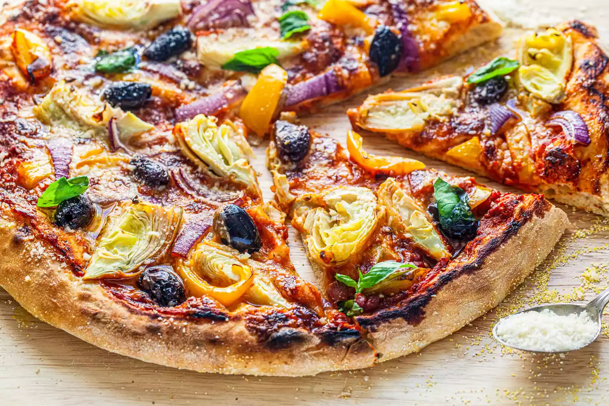
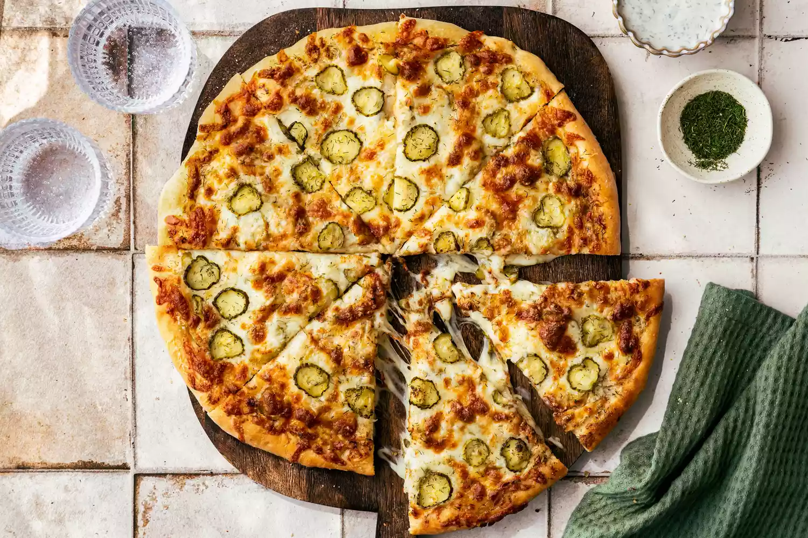

pizza
welcom to mu shop pizza , today well eat a good pizza , are you excited ?

rep 1
- 1/2 cups (355 ml) warm water (105°F-115°F)
- 1 package (2 1/4 teaspoons) active dry yeast
- 3/4 cups (490g) bread flour
- 2 tablespoons extra virgin olive oil (omit if cooking pizza in a wood-fired pizza oven)
- 2 teaspoons kosher salt
- 1 teaspoon sugar

rep 2
- 1 pound ground chuck
- 1/2 yellow onion (about 1 cup), minced
- 2 teaspoons burger or steak seasoning
- 1-pound ball pizza dough, fully risen
- Flour, as needed for shaping the dough
- 1 egg yolk
- 1 tablespoon cold water
- 2 tablespoons sesame seeds
- 1 1/4 to 1 1/2 cups Secret Sauce (or Thousand Island dressing), divided
- 2 1/2 to 3 cups (12 ounces) shredded sharp cheddar cheese
- 3/4 cup dill pickle slices
- 10 cherry tomatoes, halved
- 1 cup shredded romaine lettuce

rep 3
- 2 (1-pound) store-bought or homemade pizza dough
- All-purpose flour, for dusting the countertop
- Cornmeal, to dust the peel or baking sheet
- 3/4 cup store-bought or homemade pizza sauce
- 1 cup (4 ounces) grated mozzarella cheese
- 1/2 yellow bell pepper, seeded and sliced
- 1/2 small red onion, sliced
- 1/2 cup pitted kalamata olives, halved if large
- 1 (14-ounce) can artichoke hearts packed in water, drained and quartered
- 1/4 cup grated Parmesan cheese
- Olive oil, for garnish
- Basil leaves, for garnish

rep 4
- 2 (1-pound) balls pizza dough, homemade or store-bought, at room temperature
- All-purpose flour, for dusting the countertop
- Cornmeal, to dust the peel or baking sheet
- 3/4 cup garlic-dill sauce, divided
- 2 cups jarred dill pickle slices, patted dry, divided
- 2 cups shredded whole-milk low-moisture mozzarella cheese, divided
- 1/2 cup finely grated Parmesan cheese, divided
- 1 teaspoon dried dill, divided
